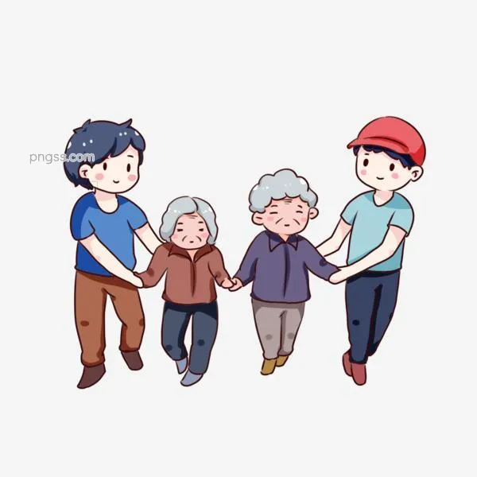
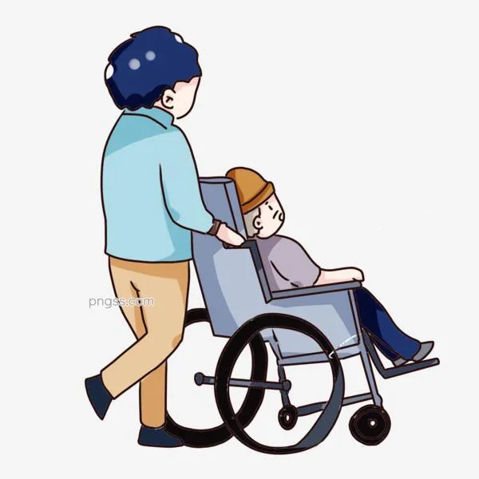

尊敬长辈，爱护幼小。
“老吾老，以及人之老，幼吾幼，以及人之幼。天下可运于掌。”孟子的这段教导的意思
尊老爱幼是我国优良的道德传统的精华。尊老爱幼是人类敬重自己的表现，每个人都有自己的儿童时代，每个人也都有老的一天。一代代人由小孩到老人，不管是处于盛唐还是当今社会，有一点却是共同的，那就是弘扬尊老爱幼的优良传统。
尊老爱幼起始于原始社会，当时生产力低下，在氏族公社的内部为了人类的繁衍和文明的延续，对丧失劳动能力的老人和尚无劳动与生活能力的小孩都一样分配劳动果实，实行义务抚养。由此逐渐形成的这种朴素的道德观念，被继承下来。
从原始的社会，就已有了尊老爱幼的思想，这使人听起来感到非常的高兴，从中也可看出人性的善良。“尊老爱幼”有着她经久不衰的生命力。这项传统美德一定会被我们永远的继承下去。
1986年，根据中国老龄问题全国委员会的建议，国务院决定将每年农历九月九日的重阳节定为“中国老人节”，借助传统的重阳节，祝愿全国老人健康长寿。中华人民共和国成立以后，于1949年12月规定每年6月1日为儿童节。
中国人一向说自己是一个懂得尊老的民族，我们从小受到的教育，也是要尊老敬幼。成年人有很多无形的责任，自己的工作、恋爱、家庭、孩子，我相信，成年人都会有这样的烦恼：在外辛苦工作，为了更好的将来打拼，但又有多少子女能体会到父母的爱？
尊老爱幼是我国古代优良的传统美德，我们要弘扬这优良的传统。为新中国的精神文明建设贡献自己的一份力量。


婚姻法为什么要规定尊老爱幼？
婚姻法规定要尊老爱幼，其原因主要有：
①尊老爱幼是中华民族的优良传统和美德。我们应当继承和发扬这一优良传统。
②这是社会主义道德法律化的要求。我们知道，婚姻法具有强烈的伦理道德性，即道德伦理与法律具有兼容性，道德上的要求法律有相应的规定，法律规定又得到道德的强力支持。像尊老爱幼这种中华民族的美德，我们就应当将其上升到法律的高度，用法律来保障老人受到尊重，孩子得到照顾。
③这是现实生活的需要。尽管我国绝大多数人都能做到尊老爱幼，但仍有少数人不能履行对老人应尽的法律义务，及对未成人虐待、遗弃，因此有必要对这些人予以法律约束。